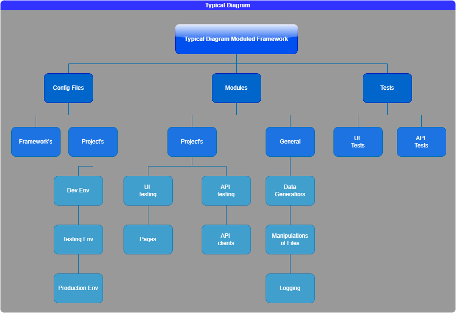

How-To Guides
Structure and Pipeline of Framework
The main components of the Framework:
- Configuration files
- Modules
- Tests
Generic modules are those that perform generic actions, e.g write data to a text file. That is, they are not written specifically for your product.
Project modules are those that are created exclusively for testing your product.

How to use this Framework?
The main idea is the pipline:
- Define module with class that must do what do you need.
- Write tests for this module in the folder
tests\..\test_*.py - Registrate pytest.marks, write
fixturesif you're needing and make changes in configuration*.yamlfile. - Run tests!
pytest -m your_mark
Structure of the Framework
QA-Framework/
├── become_qa_auto.db
├── config
│ ├── __init__.py
│ ├── config.py
│ └── config.yaml
├── conftest.py
├── modules
│ ├── api
│ │ └── clients
│ │ ├── __init__.py
│ │ └── github.py
│ ├── common
│ │ ├── __init__.py
│ │ └── database.py
│ └── ui
│ └── page_objects
│ ├── __init__.py
│ ├── base_page.py
│ └── sign_in_page.py
├── pytest.ini
└── tests
├── api
│ ├── test_api.py
│ ├── test_fixtures.py
│ ├── test_github_api.py
│ └── test_http.py
├── database
│ └── test_database.py
└── ui
├── test_ui.py
└── test_ui_page_object.py